The DailyRecord is a project-specific database management tool designed to maintain large amounts of work related data. With its clean, context-aware interactions, the tool provides a very comprehensive and easy to use interface to create content and access database.
The tool was adjudged the 'Best Innovation of the year' during an internal-Ericsson 'Innovation Week' event.Introduction
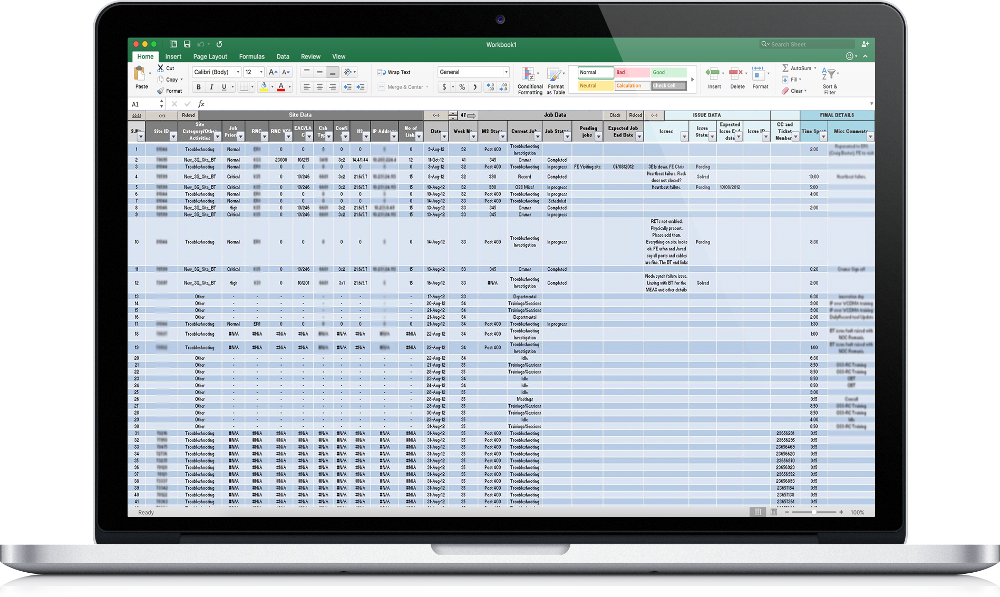
The Story Behind The Tool
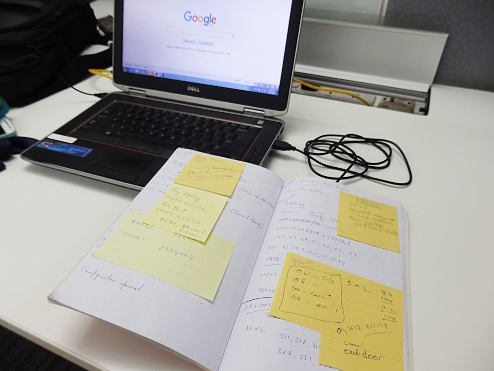
A project I started working in was in its early stages and job related data records were being maintained in notebooks and loose sheets of paper. It was not efficient, both in terms of time spent and use of paper.
There was no uniformity in the way data was being maintained. Due to the lack of a software program or a common process defined to store information, every person in the team maintained data individually. This caused a lot of problems when data
had to be shared between team members and between the leads and the team members.
This was causing me great discomfort. I felt like I was spending too much time talking to people than getting work done. To solve that problem, and keep my work organized I created a simple tool on MS Excel. And that eventually evolved into
DataRecord, a sophisticated tool that handled the database of the entire team.
Target Users
- My Project team-mates (Close to 30 people).
- Team Leads and Managers.
Problems
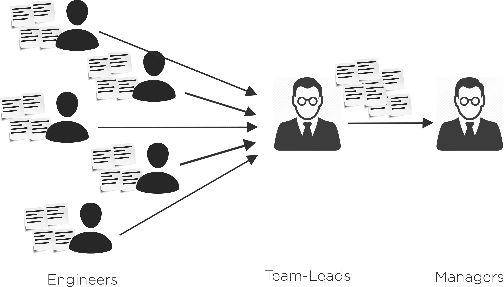
Yours truly was the first subject I researched on to understand the problems. And most of the problems I faced were also being faced by other members of the team. Some of the problems were:
- No centralized mechanism to record and maintain data related to the work.
- Post-it notes were getting lost more frequently than we wanted, more when we had to report our data to the managers.
- We spent more time consolidating data and discussing them with the managers than was necessary leading to confusion and frustration.
- Solutions to problems by one person was not accessible by all team members - Same problems were being troubleshooted from scratch by multiple people.
Research
The research involved Observing people while they work and User interviews. Early in the development process, I borrowed my colleagues' notes and post-its to understand how they record
their data. I also spoke to my colleagues and enquired about their specific frustrations with the existing system.
Findings
From the research I understood that:- By observing the notes people took down, I found out that although people used a lot of information during work, they only made a note of a few important bits. With this data I understood what information is most used and most frequently accessed/updated and put that on top in the design.
- I understood that people hated filling excel sheets. Upon further enquiry, I came to know that it's not the software they hated, but it's the amount of data they had to manually enter.
- I also realised that they were averse to using a new software as they were already used to using excel and used it very frequently.
Ideation
I wanted to create a tool which did not consume too much time, and yet was intuitive enough to maintain and handle all the information related to the project. I envisioned the following features:
- Maintain all the data related to the project automatically.
- Create reports automatically summarizing the weekly work data, so that I didn't have to do that manually every week.
- Keep a record of all the issues faced by all the team mates with respective solutions so that we didn't have to reinvent the wheel every time the issue repeated.
Wireframes
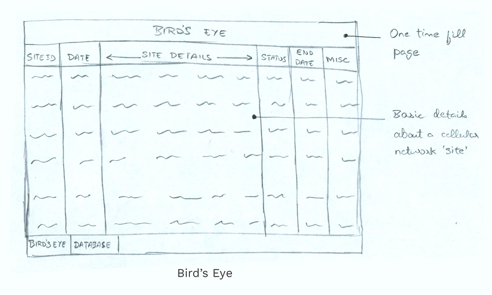 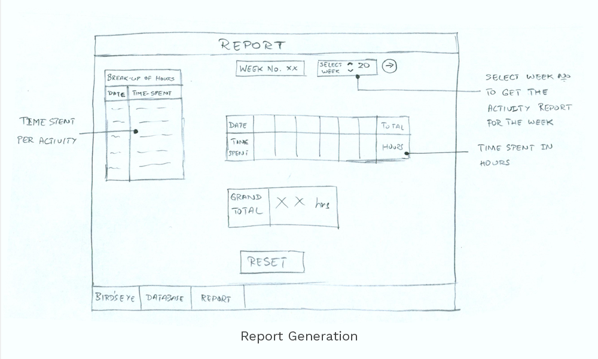 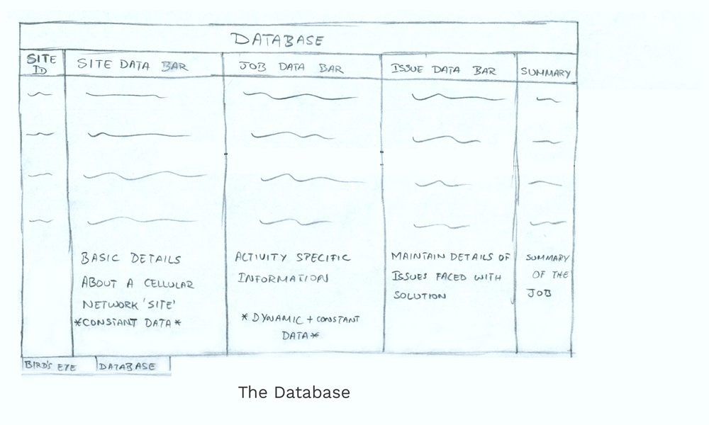
Having discussed with my colleagues and understood what their concerns and needs are with respect to data recording, I came up with wireframes for the tool.
Usability Testing
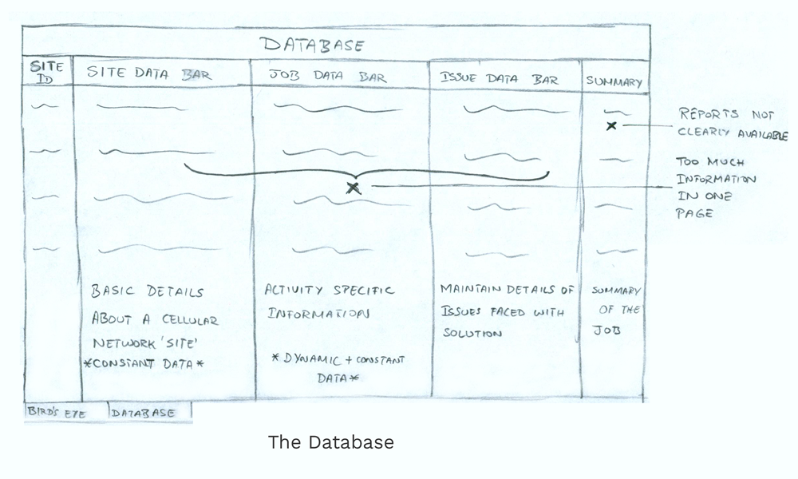
After developing the first version of the product, I conducted a beta usability testing. I conducted a mix of Open ended usability tests and Specific use-case tests. I observed how users
interacted with the tool. These studies revealed several bugs and loopholes. Some of them are:
- The interface was cluttered with information and it wasn't easy to scroll between columns.
- Making reports of weekly activities was still taking a lot of time.
- This version did not have features to allow scheduling of future work.
'Son of a Tool'
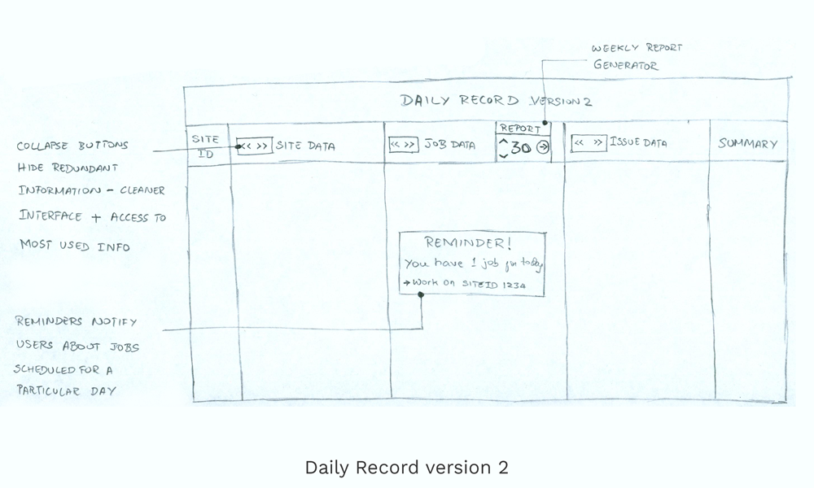
Based on the data collected from the usability studies, I went back to the drawing board and added some new features and performance improvements which made the tool almost twice as fast and more efficient than the first version. Some of the improvements
included:
- The collapse buttons made the interface much cleaner and presented information in an easy-to-read format.
- Weekly reports could be easily generated with the press of a button, thus saving significant amount of time.
- The new scheduler function would remind the user of any activity scheduled on that particular day.
Final Product
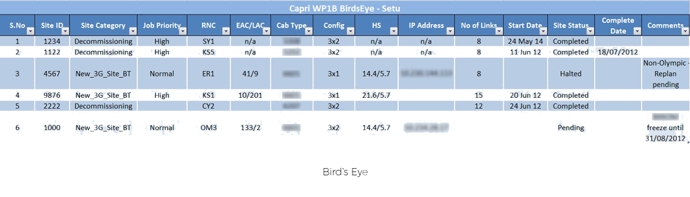 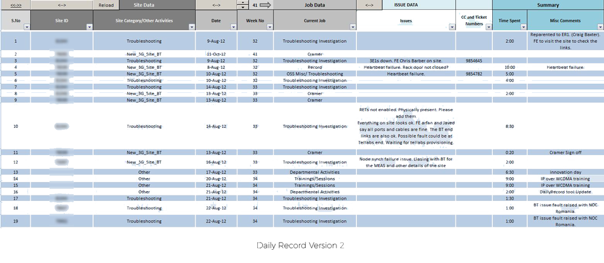 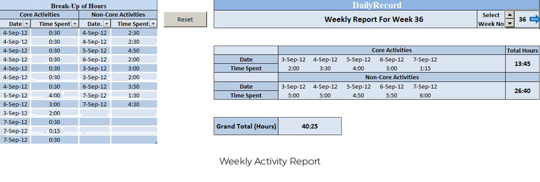 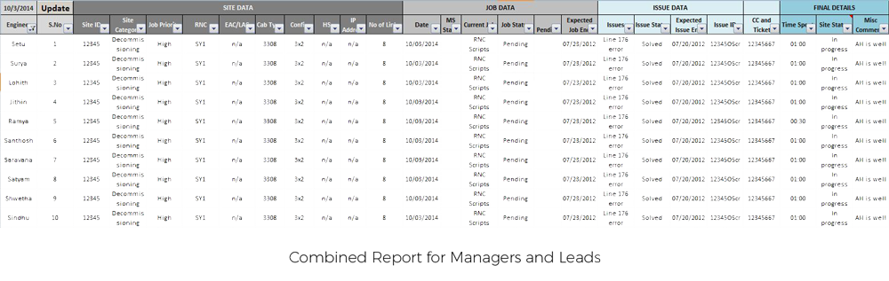
- In the end a user had to click at the most 3-4 buttons and fill in 3-4 fields. The tool automatically took care of organising and maintaining the work of the user.
- As much as 90% of database management time and human errors were saved.
- The Weekly Report function made it very easy for the users to keep a track of their activity and submit reports by the end of the week.
- The managers and leads found it very convinient to monitor the progress of the activities using the Combined Report.
- It eliminated use of papers thereby being ecofriendly.
A quick demo of the tool
Learnings
I started developing the tool with no prior software design experience. As I progressed, I learnt the immense possibilities of product design and gained skills like user centered design, programming and product development cycle from the stage
of conceptualization to the final delivery.
User centric approach was an important learning since I was working with a team of different individuals with unique work roles and mindsets.
"I learned that defining and approaching the problem is more important than the platform to solve it"
As per Ericsson's internal cost saving calculations, the projected savings in cost amounted to close to $1m/year.
Most importantly, I learned that a design problem can be solved by a tool as inconspicuous as MS Excel.I learned that defining and approcahing the problem is more important than the platform to solve it.